Maine
Biden is projected to receive between 40% and 60% of the vote in Maine. Trump is projected to receive between 32% and 52%. In 25000 simulations of the election in Maine, Biden wins 70% and Trump wins 30%.
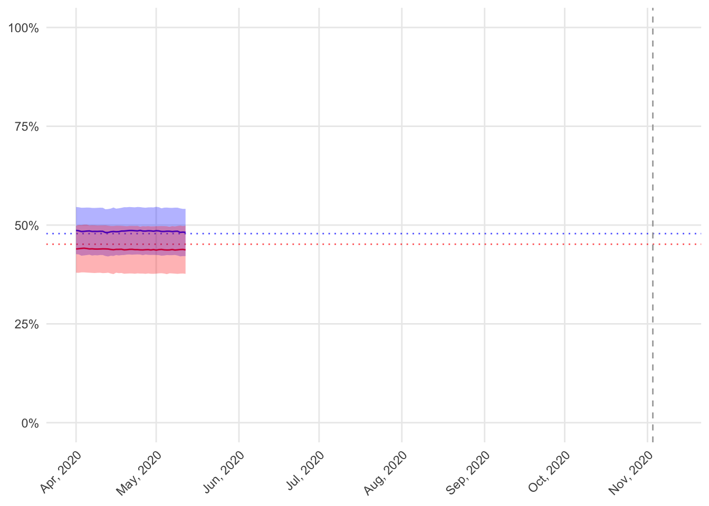
Updated April 12, 2020.
Biden is projected to win between 242 and 377 electoral college votes. Trump is projected to win between 161 and 295 electoral college votes. In 25000 simulations of the presidential election from the perspective of April 12, 2020, Biden wins 84% and Trump wins 16%.


Biden is projected to win between 46% and 53% of the national popular vote. Trump is projected to win between 41% and 49% of the national popular vote. In 25000 simulations of the popular vote from the perspective of April 12, 2020, Biden wins 82% and Trump wins 18%.

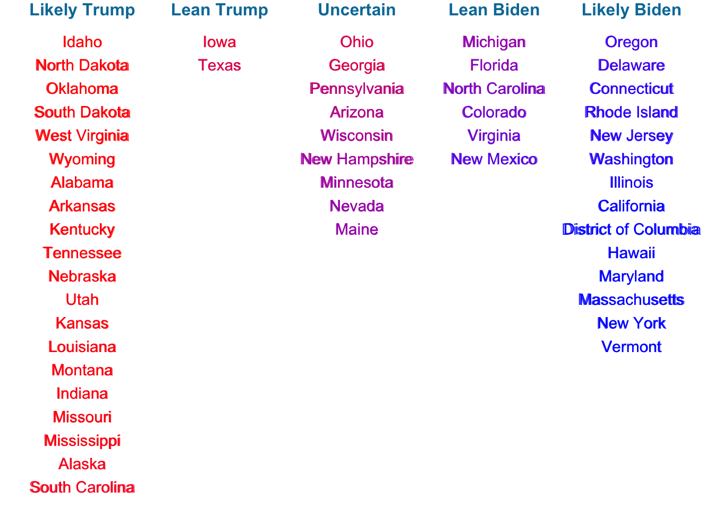

Note that uncertainties at this time are due to a) close races and/or b) few polls. As more polls become available and election day nears, error bars should shrink and the range of reasonable potential outcomes should narrow.
Biden is projected to receive between 26% and 46% of the vote in Alabama. Trump is projected to receive between 49% and 69%. In 25000 simulations of the election in Alabama, Biden wins 7% and Trump wins 93%.
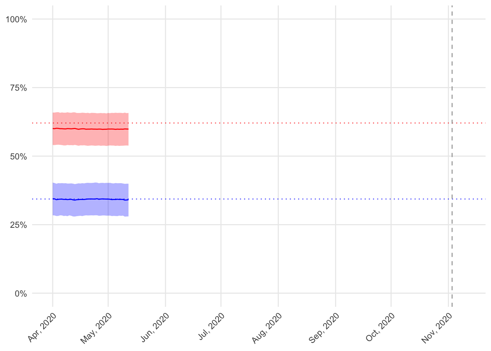
Biden is projected to receive between 25% and 49% of the vote in Alaska. Trump is projected to receive between 37% and 61%. In 25000 simulations of the election in Alaska, Biden wins 24% and Trump wins 76%.

Biden is projected to receive between 39% and 54% of the vote in Arizona. Trump is projected to receive between 37% and 52%. In 25000 simulations of the election in Arizona, Biden wins 58% and Trump wins 42%.

Biden is projected to receive between 21% and 45% of the vote in Arkansas. Trump is projected to receive between 45% and 69%. In 25000 simulations of the election in Arkansas, Biden wins 8% and Trump wins 92%.

Biden is projected to receive between 53% and 67% of the vote in California. Trump is projected to receive between 25% and 38%. In 25000 simulations of the election in California, Biden wins more than 99% and Trump wins less than 1%.

Biden is projected to receive between 36% and 58% of the vote in Colorado. Trump is projected to receive between 30% and 52%. In 25000 simulations of the election in Colorado, Biden wins 65% and Trump wins 35%.
Biden is projected to receive between 44% and 63% of the vote in Connecticut. Trump is projected to receive between 27% and 45%. In 25000 simulations of the election in Connecticut, Biden wins 90% and Trump wins 10%.
Biden is projected to receive between 43% and 66% of the vote in Delaware. Trump is projected to receive between 27% and 49%. In 25000 simulations of the election in Delaware, Biden wins 84% and Trump wins 16%.

Biden is projected to receive between 76% and 95% of the vote in District of Columbia. Trump is projected to receive between 1% and 14%. In 25000 simulations of the election in District of Columbia, Biden wins more than 99% and Trump wins less than 1%.

Biden is projected to receive between 40% and 55% of the vote in Florida. Trump is projected to receive between 37% and 51%. In 25000 simulations of the election in Florida, Biden wins 63% and Trump wins 36%.

Biden is projected to receive between 36% and 53% of the vote in Georgia. Trump is projected to receive between 41% and 58%. In 25000 simulations of the election in Georgia, Biden wins 34% and Trump wins 66%.
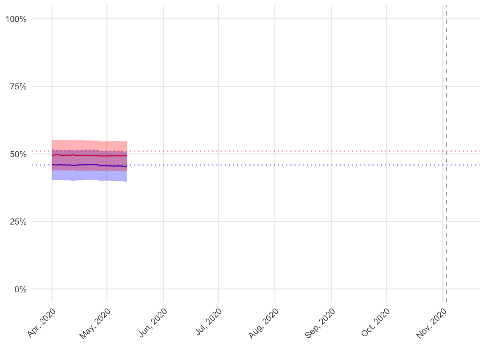
Biden is projected to receive between 49% and 73% of the vote in Hawaii. Trump is projected to receive between 15% and 39%. In 25000 simulations of the election in Hawaii, Biden wins 97% and Trump wins 3%.

Biden is projected to receive between 16% and 40% of the vote in Idaho. Trump is projected to receive between 45% and 69%. In 25000 simulations of the election in Idaho, Biden wins 5% and Trump wins 95%.
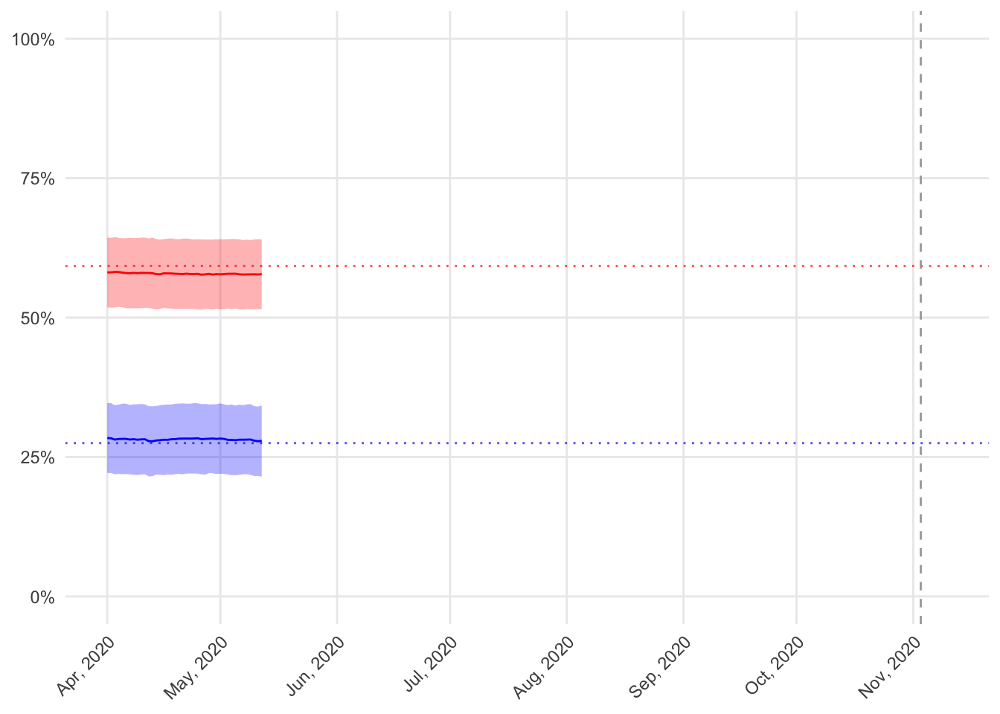
Biden is projected to receive between 43% and 67% of the vote in Illinois. Trump is projected to receive between 24% and 48%. In 25000 simulations of the election in Illinois, Biden wins 87% and Trump wins 13%.

Biden is projected to receive between 25% and 49% of the vote in Indiana. Trump is projected to receive between 41% and 65%. In 25000 simulations of the election in Indiana, Biden wins 18% and Trump wins 82%.
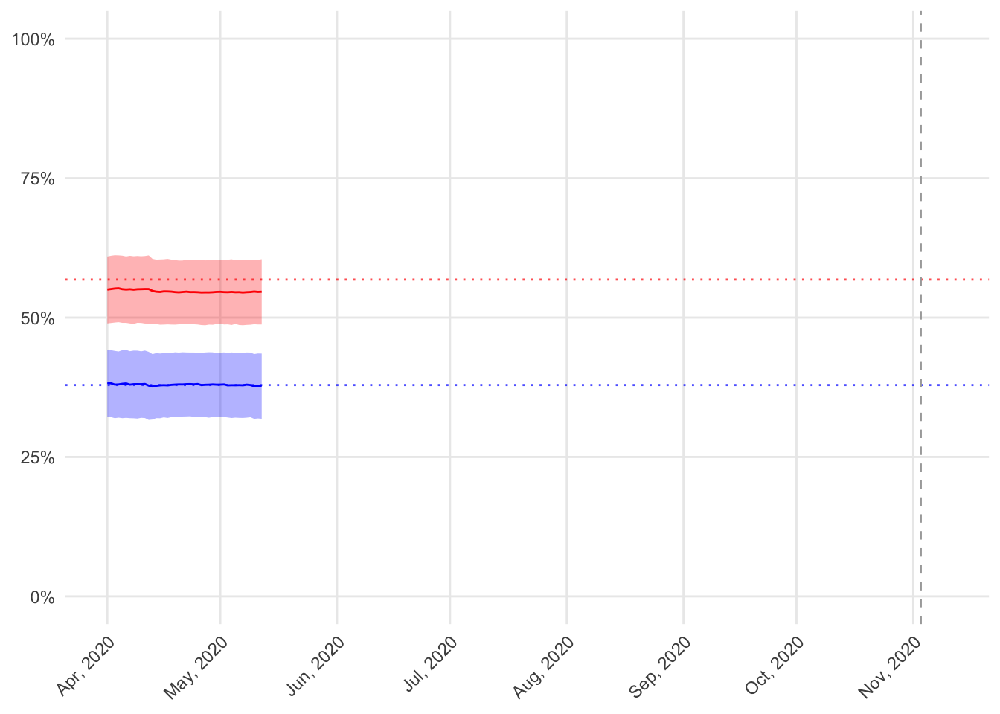
Biden is projected to receive between 35% and 53% of the vote in Iowa. Trump is projected to receive between 41% and 58%. In 25000 simulations of the election in Iowa, Biden wins 33% and Trump wins 67%.

Biden is projected to receive between 31% and 48% of the vote in Kansas. Trump is projected to receive between 44% and 62%. In 25000 simulations of the election in Kansas, Biden wins 14% and Trump wins 85%.
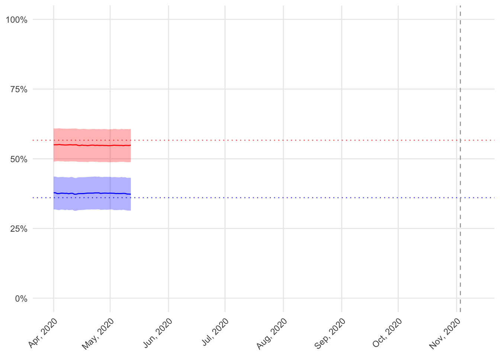
Biden is projected to receive between 20% and 44% of the vote in Kentucky. Trump is projected to receive between 47% and 71%. In 25000 simulations of the election in Kentucky, Biden wins 6% and Trump wins 94%.

Biden is projected to receive between 26% and 49% of the vote in Louisiana. Trump is projected to receive between 42% and 66%. In 25000 simulations of the election in Louisiana, Biden wins 17% and Trump wins 83%.

Biden is projected to receive between 40% and 60% of the vote in Maine. Trump is projected to receive between 32% and 52%. In 25000 simulations of the election in Maine, Biden wins 70% and Trump wins 30%.
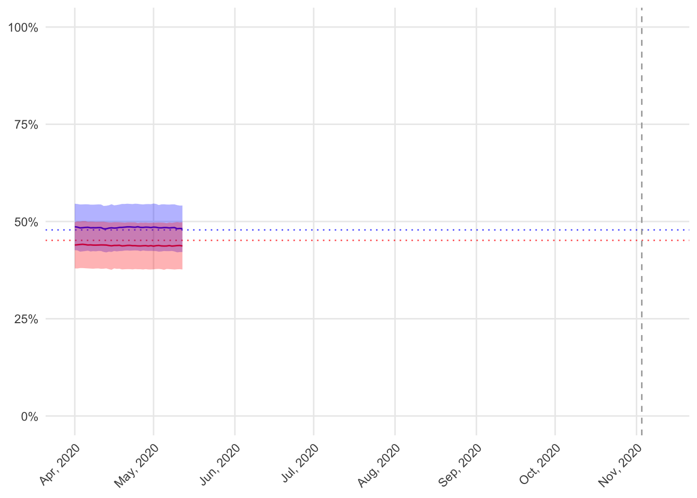
Biden is projected to receive between 52% and 72% of the vote in Maryland. Trump is projected to receive between 22% and 42%. In 25000 simulations of the election in Maryland, Biden wins 97% and Trump wins 3%.

Biden is projected to receive between 48% and 72% of the vote in Massachusetts. Trump is projected to receive between 18% and 42%. In 25000 simulations of the election in Massachusetts, Biden wins 96% and Trump wins 4%.

Biden is projected to receive between 39% and 54% of the vote in Michigan. Trump is projected to receive between 37% and 51%. In 25000 simulations of the election in Michigan, Biden wins 60% and Trump wins 39%.

Biden is projected to receive between 35% and 59% of the vote in Minnesota. Trump is projected to receive between 32% and 55%. In 25000 simulations of the election in Minnesota, Biden wins 58% and Trump wins 42%.

Biden is projected to receive between 29% and 49% of the vote in Mississippi. Trump is projected to receive between 46% and 66%. In 25000 simulations of the election in Mississippi, Biden wins 13% and Trump wins 86%.

Biden is projected to receive between 30% and 48% of the vote in Missouri. Trump is projected to receive between 43% and 62%. In 25000 simulations of the election in Missouri, Biden wins 16% and Trump wins 84%.
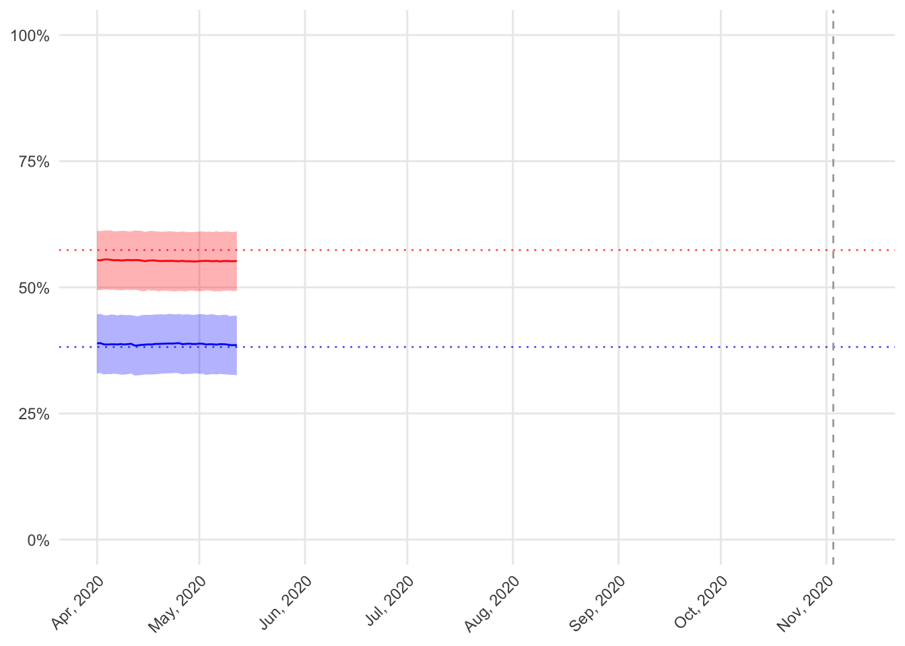
Biden is projected to receive between 23% and 45% of the vote in Montana. Trump is projected to receive between 43% and 65%. In 25000 simulations of the election in Montana, Biden wins 10% and Trump wins 90%.
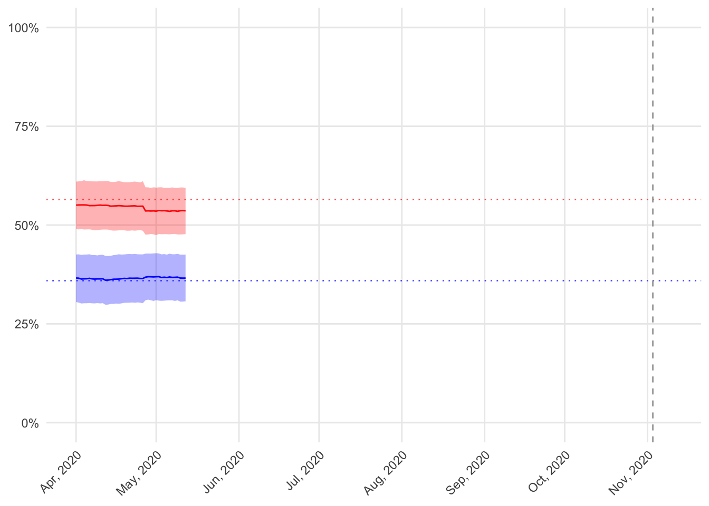
Biden is projected to receive between 22% and 46% of the vote in Nebraska. Trump is projected to receive between 45% and 68%. In 25000 simulations of the election in Nebraska, Biden wins 9% and Trump wins 90%.

Biden is projected to receive between 38% and 56% of the vote in Nevada. Trump is projected to receive between 32% and 50%. In 25000 simulations of the election in Nevada, Biden wins 67% and Trump wins 33%.

Biden is projected to receive between 40% and 57% of the vote in New Hampshire. Trump is projected to receive between 36% and 53%. In 25000 simulations of the election in New Hampshire, Biden wins 64% and Trump wins 36%.
Biden is projected to receive between 43% and 65% of the vote in New Jersey. Trump is projected to receive between 26% and 47%. In 25000 simulations of the election in New Jersey, Biden wins 87% and Trump wins 13%.

Biden is projected to receive between 38% and 60% of the vote in New Mexico. Trump is projected to receive between 30% and 52%. In 25000 simulations of the election in New Mexico, Biden wins 71% and Trump wins 29%.

Biden is projected to receive between 48% and 66% of the vote in New York. Trump is projected to receive between 25% and 44%. In 25000 simulations of the election in New York, Biden wins 95% and Trump wins 5%.

Biden is projected to receive between 40% and 56% of the vote in North Carolina. Trump is projected to receive between 38% and 54%. In 25000 simulations of the election in North Carolina, Biden wins 57% and Trump wins 42%.

Biden is projected to receive between 22% and 42% of the vote in North Dakota. Trump is projected to receive between 49% and 70%. In 25000 simulations of the election in North Dakota, Biden wins 4% and Trump wins 96%.
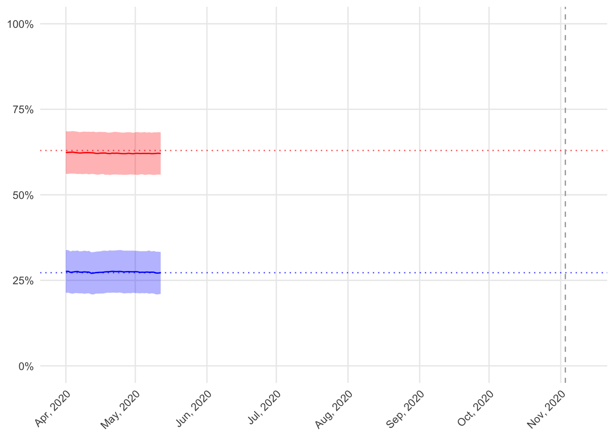
Biden is projected to receive between 38% and 54% of the vote in Ohio. Trump is projected to receive between 39% and 55%. In 25000 simulations of the election in Ohio, Biden wins 48% and Trump wins 51%.

Biden is projected to receive between 21% and 40% of the vote in Oklahoma. Trump is projected to receive between 51% and 71%. In 25000 simulations of the election in Oklahoma, Biden wins 2% and Trump wins 98%.

Biden is projected to receive between 40% and 64% of the vote in Oregon. Trump is projected to receive between 26% and 50%. In 25000 simulations of the election in Oregon, Biden wins 79% and Trump wins 21%.
Biden is projected to receive between 39% and 55% of the vote in Pennsylvania. Trump is projected to receive between 37% and 52%. In 25000 simulations of the election in Pennsylvania, Biden wins 59% and Trump wins 40%.

Biden is projected to receive between 42% and 66% of the vote in Rhode Island. Trump is projected to receive between 25% and 49%. In 25000 simulations of the election in Rhode Island, Biden wins 84% and Trump wins 16%.

Biden is projected to receive between 32% and 49% of the vote in South Carolina. Trump is projected to receive between 42% and 59%. In 25000 simulations of the election in South Carolina, Biden wins 22% and Trump wins 77%.
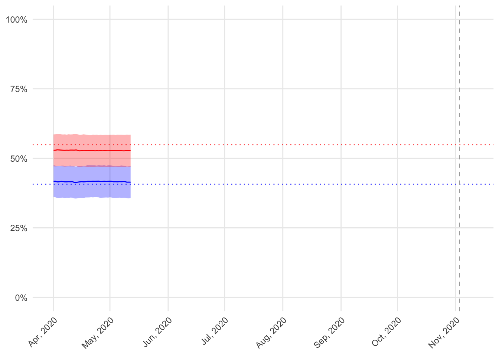
Biden is projected to receive between 20% and 43% of the vote in South Dakota. Trump is projected to receive between 46% and 71%. In 25000 simulations of the election in South Dakota, Biden wins 6% and Trump wins 94%.

Biden is projected to receive between 25% and 46% of the vote in Tennessee. Trump is projected to receive between 47% and 69%. In 25000 simulations of the election in Tennessee, Biden wins 8% and Trump wins 92%.
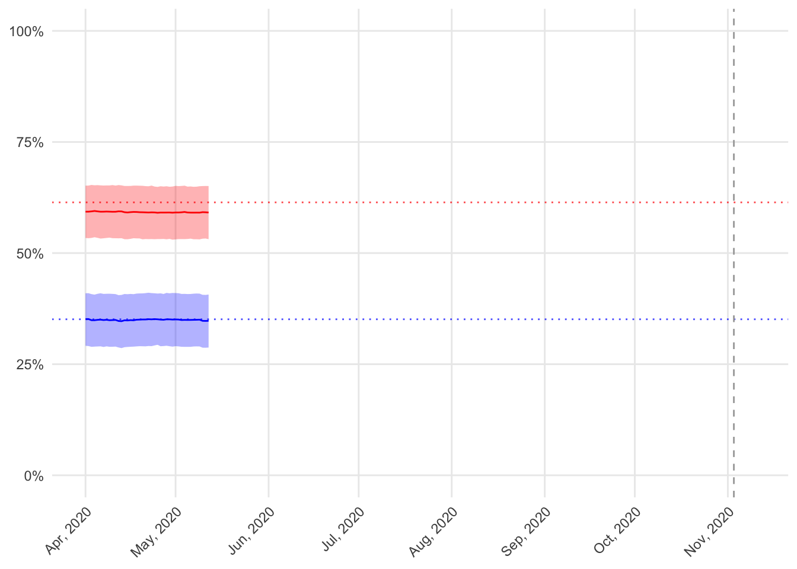
Biden is projected to receive between 37% and 52% of the vote in Texas. Trump is projected to receive between 40% and 55%. In 25000 simulations of the election in Texas, Biden wins 41% and Trump wins 59%.
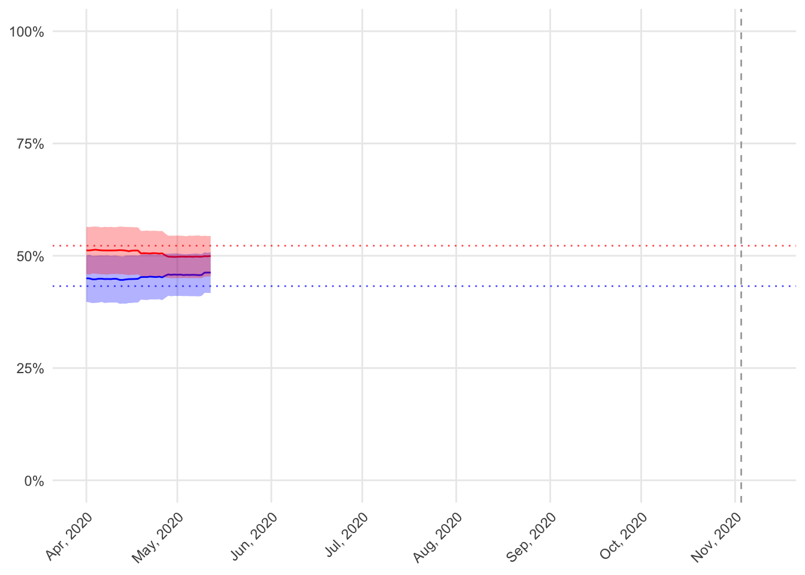
Biden is projected to receive between 22% and 40% of the vote in Utah. Trump is projected to receive between 37% and 56%. In 25000 simulations of the election in Utah, Biden wins 11% and Trump wins 89%.
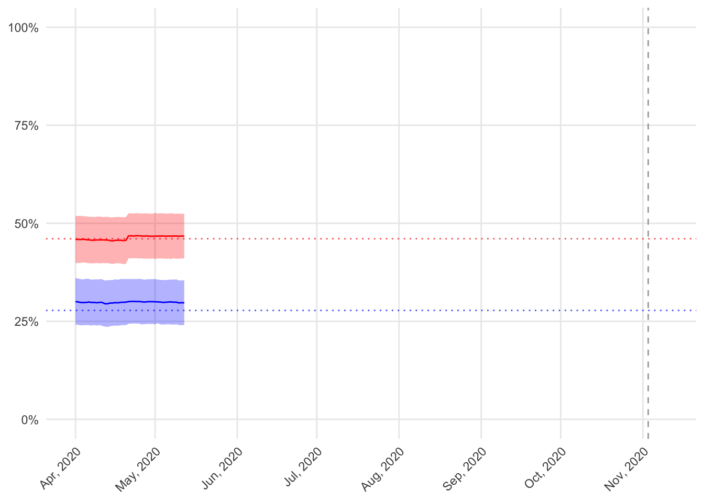
Biden is projected to receive between 44% and 69% of the vote in Vermont. Trump is projected to receive between 16% and 40%. In 25000 simulations of the election in Vermont, Biden wins 94% and Trump wins 6%.

Biden is projected to receive between 38% and 57% of the vote in Virginia. Trump is projected to receive between 32% and 51%. In 25000 simulations of the election in Virginia, Biden wins 67% and Trump wins 33%.

Biden is projected to receive between 45% and 64% of the vote in Washington. Trump is projected to receive between 26% and 45%. In 25000 simulations of the election in Washington, Biden wins 91% and Trump wins 9%.

Biden is projected to receive between 17% and 38% of the vote in West Virginia. Trump is projected to receive between 54% and 76%. In 25000 simulations of the election in West Virginia, Biden wins 1% and Trump wins 99%.
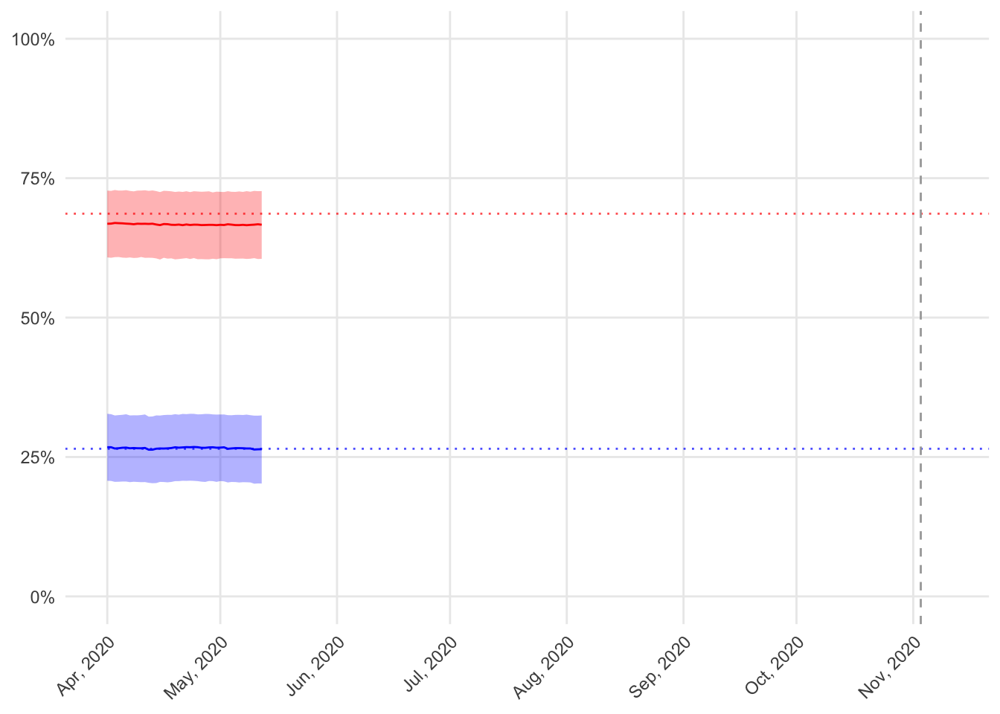
Biden is projected to receive between 40% and 54% of the vote in Wisconsin. Trump is projected to receive between 38% and 53%. In 25000 simulations of the election in Wisconsin, Biden wins 56% and Trump wins 44%.
Biden is projected to receive between 11% and 34% of the vote in Wyoming. Trump is projected to receive between 52% and 77%. In 25000 simulations of the election in Wyoming, Biden wins less than 1% and Trump wins 99%.